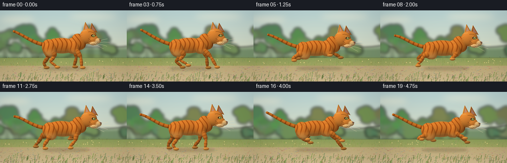
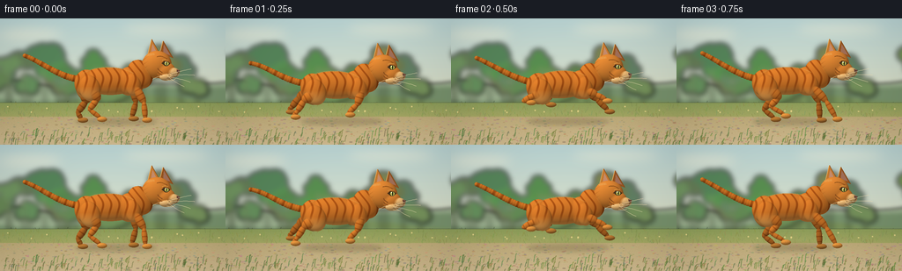

CODING AGENTS AS PIXEL WORLD MODELS
traex/GPT-6.1-Sol · instance_preservation_0003
点击播放 · 原生 RGB 像素
逐轮保存的候选
回放视频、检查图与代码变化。
每份候选均可单独播放。实际图片检查记录在下方工具轨迹中。
候选 01播放与检查图
点击播放 · 原生 RGB 像素


展开代码变化
--- 上一保存版本
+++ 本次保存版本
@@ -0,0 +1,307 @@
+"""A procedural, supersampled orange tabby gallop. No external assets."""
+import json, math
+from pathlib import Path
+import numpy as np
+from PIL import Image, ImageDraw, ImageFilter
+import artifact_io
+
+ROOT=Path(__file__).resolve().parent
+SPEC=json.loads((ROOT/'task_spec.json').read_text())
+W,H=SPEC['width'],SPEC['height']
+S=3
+SW,SH=W*S,H*S
+rng=np.random.default_rng(19)
+
+def line(draw, pts, fill, width=1):
+ draw.line([(round(x*S),round(y*S)) for x,y in pts],fill=fill,width=max(1,round(width*S)),joint='curve')
+def ellipse(draw,box,fill):
+ draw.ellipse(tuple(round(v*S) for v in box),fill=fill)
+def poly(draw,pts,fill):
+ draw.polygon([(round(x*S),round(y*S)) for x,y in pts],fill=fill)
+def bezier(points,n=35):
+ p=np.asarray(points,float); t=np.linspace(0,1,n)[:,None]
+ if len(p)==4:
+ return (1-t)**3*p[0]+3*(1-t)**2*t*p[1]+3*(1-t)*t*t*p[2]+t**3*p[3]
+ return (1-t)**2*p[0]+2*(1-t)*t*p[1]+t*t*p[2]
+
+# Broad, defocused landscape layers. Each plane moves at its own tracking speed.
+PW=700
+sky=np.zeros((SH,PW*S,3),np.uint8)
+for y in range(SH):
+ t=y/SH
+ sky[y]=np.array([186,213,213])*(1-t)+np.array([238,226,185])*t
+sky=Image.fromarray(sky)
+d=ImageDraw.Draw(sky)
+for x,y,rx,ry in [(35,18,35,6),(188,12,49,5),(335,24,42,5),(490,15,54,5),(640,26,42,6)]:
+ ellipse(d,(x-rx,y-ry,x+rx,y+ry),(222,230,214))
+sky=sky.filter(ImageFilter.GaussianBlur(6*S))
+hills=Image.new('RGBA',(PW*S,SH),(0,0,0,0)); d=ImageDraw.Draw(hills)
+for level,(base,amp,col) in enumerate([(67,10,(156,176,143,255)),(83,9,(119,145,108,255)),(96,6,(121,145,91,255))]):
+ pts=[(x,base+amp*math.sin(x/88+level*1.4)+3*math.sin(x/32)) for x in range(-5,PW+6,3)]
+ poly(d,pts+[(PW,H),(0,H)],col)
+hills=hills.filter(ImageFilter.GaussianBlur(2.2*S))
+trees=Image.new('RGBA',(PW*S,SH),(0,0,0,0)); d=ImageDraw.Draw(trees)
+for j in range(70):
+ x=float(rng.uniform(-20,PW+20)); top=float(rng.uniform(35,78)); r=float(rng.uniform(9,26))
+ col=(int(rng.uniform(85,128)),int(rng.uniform(120,151)),int(rng.uniform(76,102)),255)
+ line(d,[(x,top+12),(x+2,101)],(111,123,79,180),1.6)
+ for k in range(8):
+ cx=x+float(rng.normal(0,r*.35)); cy=top+float(rng.normal(7,r*.25))
+ ellipse(d,(cx-r*.6,cy-r*.46,cx+r*.6,cy+r*.46),col)
+trees=trees.filter(ImageFilter.GaussianBlur(3.1*S))
+# Meadow and dirt running track, with stable world-space stones and blades.
+ground=np.zeros((SH,PW*S,4),np.uint8)
+for yy in range(96*S,SH):
+ y=yy/S
+ if y<112:
+ f=(y-96)/16; c=np.array([139,156,89])*(1-f)+np.array([165,168,100])*f
+ else:
+ f=(y-112)/32; c=np.array([190,171,121])*(1-f)+np.array([210,188,145])*f
+ noise=rng.normal(0,2.2,(PW*S,1))
+ ground[yy,:,:3]=np.clip(c+noise,0,255); ground[yy,:,3]=255
+ground=Image.fromarray(ground);d=ImageDraw.Draw(ground)
+for j in range(2000):
+ x=float(rng.uniform(0,PW)); y=float(rng.uniform(98,143)); a=float(rng.uniform(.3,1.8))
+ if y<113:
+ c=(int(rng.uniform(115,160)),int(rng.uniform(130,167)),int(rng.uniform(62,103)),255)
+ line(d,[(x,y),(x+float(rng.uniform(-2,2)),y-float(rng.uniform(1,5)) )],c,.4)
+ else:
+ c=(int(rng.uniform(160,208)),int(rng.uniform(142,183)),int(rng.uniform(100,143)),255)
+ ellipse(d,(x-a,y-.22*a,x+a,y+.35*a),c)
+for j in range(450):
+ x=float(rng.uniform(0,PW)); y=float(rng.uniform(133,149)); ht=float(rng.uniform(2,9))
+ col=(int(rng.uniform(86,133)),int(rng.uniform(112,150)),int(rng.uniform(53,83)),255)
+ line(d,[(x-1,y),(x,y-ht),(x+1,y-ht-1)],col,.55)
+for j in range(40):
+ x=float(rng.uniform(0,PW)); y=float(rng.uniform(99,108))
+ ellipse(d,(x-.7,y-.6,x+.7,y+.6),(230,211,136,255))
+ground=ground.filter(ImageFilter.GaussianBlur(.25*S))
+
+YY,XX=np.mgrid[0:SH,0:SW].astype(np.float32)
+XX=(XX+.5)/S;YY=(YY+.5)/S
+
+class FurRenderer:
+ def __init__(self,center):
+ self.depth=np.full((SH,SW),-1e5,np.float32)
+ self.normal=np.zeros((SH,SW,3),np.float32)
+ self.color=np.zeros((SH,SW,3),np.float32)
+ self.center=center
+ def ellipsoid(self,c,r,angle=0,kind='body',phase=0,dark=1):
+ cx,cy,cz=c;rx,ry,rz=r
+ co,si=math.cos(angle),math.sin(angle)
+ extent=math.hypot(rx,ry)+1
+ x0=max(0,int((cx-extent)*S));x1=min(SW,int((cx+extent)*S)+1)
+ y0=max(0,int((cy-extent)*S));y1=min(SH,int((cy+extent)*S)+1)
+ if x0>=x1 or y0>=y1:return
+ x=XX[y0:y1,x0:x1]; y=YY[y0:y1,x0:x1]
+ u=(co*(x-cx)+si*(y-cy))/rx;v=(-si*(x-cx)+co*(y-cy))/ry
+ q=1-u*u-v*v; mask=q>0
+ z=np.sqrt(np.maximum(q,0));dep=cz+rz*z
+ nx0=u/rx;ny0=v/ry;nz=z/rz
+ nx=co*nx0-si*ny0;ny=si*nx0+co*ny0
+ norm=np.sqrt(nx*nx+ny*ny+nz*nz)+1e-8
+ normal=np.stack([nx/norm,ny/norm,nz/norm],axis=-1)
+ X=x-self.center[0];Y=y-self.center[1]
+ # The dark orange mackerel pattern follows anatomy, not screen noise.
+ if kind=='body':
+ wave=(X/9.2 + .09*np.sin(Y*.28)+.0026*Y*Y)*2*np.pi
+ stripe=np.clip((np.cos(wave)-.53)/.47,0,1)**.65
+ stripe*=np.clip((16-Y)/14,0,1)
+ belly=np.clip((Y-6)/14,0,.82)
+ col=np.stack([211+24*belly,127+48*belly,48+51*belly],-1)
+ elif kind=='head':
+ wave=(Y/5.1+.13*X)*2*np.pi
+ stripe=np.clip((np.cos(wave)-.55)/.45,0,1)*.7
+ stripe*=np.clip((43-X)/10,0,1)
+ col=np.zeros((*u.shape,3))+[218,139,58]
+ elif kind=='leg':
+ wave=(u*rx/6.0+phase)*2*np.pi
+ stripe=np.clip((np.cos(wave)-.5)/.5,0,1)*.7
+ col=np.zeros((*u.shape,3))+[208,126,48]
+ elif kind=='tail':
+ wave=(phase+u*rx/10)*2*np.pi
+ stripe=np.clip((np.cos(wave)-.3)/.7,0,1)*.85
+ col=np.zeros((*u.shape,3))+[207,123,43]
+ elif kind=='cream':
+ stripe=0;col=np.zeros((*u.shape,3))+[231,193,135]
+ elif kind=='paw':
+ stripe=0;col=np.zeros((*u.shape,3))+[220,152,70]
+ else:
+ stripe=0;col=np.zeros((*u.shape,3))+[211,133,52]
+ col-=np.asarray(stripe)[...,None]*np.array([50,46,26])
+ # Fine, longitudinal fur with low contrast and fixed material-space detail.
+ grain=(np.sin(x*10.31+y*27.71+cz*3)*np.sin(x*22.4-y*6.13)+.45*np.sin(y*42+x*2.2))
+ col+=grain[...,None]*4
+ col*=dark
+ old=self.depth[y0:y1,x0:x1]
+ # A smooth union of overlapping anatomical volumes avoids hard ball joints.
+ valid=mask&(dep>old-1.3)
+ blend=np.clip(.5+.5*(dep-old)/1.3,0,1)
+ blend=np.where(old< -1000,1,blend)
+ blend=np.where(valid,blend,0)
+ h=np.maximum(1-np.abs(dep-old)/1.3,0)
+ merged=np.maximum(dep,old)+h*h*.325
+ self.depth[y0:y1,x0:x1]=np.where(valid,merged,old)
+ a=blend[...,None]
+ self.normal[y0:y1,x0:x1]=normal*a+self.normal[y0:y1,x0:x1]*(1-a)
+ self.color[y0:y1,x0:x1]=col*a+self.color[y0:y1,x0:x1]*(1-a)
+ def segment(self,a,b,width,z,kind='leg',phase=0,dark=1):
+ a=np.array(a);b=np.array(b);c=(a+b)/2
+ delta=b-a; length=np.linalg.norm(delta)
+ self.ellipsoid((c[0],c[1],z),(length/2+width*.5,width,width*.9),math.atan2(delta[1],delta[0]),kind,phase,dark)
+ def composite(self,bg):
+ n=self.normal; nl=np.linalg.norm(n,axis=-1,keepdims=True)+1e-8;n=n/nl
+ light=np.array([-.43,-.66,.62]);light/=np.linalg.norm(light)
+ lam=np.maximum(n@light,0)
+ # Warm sun, sky fill, and a subtle fur rim.
+ shade=.57+.47*lam
+ warm=np.stack([shade*1.06,shade*1.00,shade*.91],-1)
+ rim=(1-n[:,:,2])**3*.13
+ rgb=np.clip(self.color*warm+rim[...,None]*np.array([56,39,16]),0,255)
+ out=np.asarray(bg.convert('RGB')).copy()
+ mask=self.depth>-1000
+ out[mask]=rgb[mask].astype(np.uint8)
+ return Image.fromarray(out)
+
+def interp(keys,phase):
+ p=phase%1
+ for j in range(len(keys)-1):
+ ta,a=keys[j];tb,b=keys[j+1]
+ if ta<=p<tb:
+ f=(p-ta)/(tb-ta);f=f*f*(3-2*f)
+ return np.asarray(a)*(1-f)+np.asarray(b)*f
+ return np.asarray(keys[-1][1])
+
+frontkeys=[(0,[170,96,184,116]),(.22,[163,98,164,117]),(.44,[150,98,138,114]),(.59,[146,88,144,88]),(.8,[164,85,176,94]),(1,[170,96,184,116])]
+hindkeys=[(0,[115,93,106,105,122,116]),(.22,[101,96,91,110,95,117]),(.44,[86,89,78,103,72,111]),(.60,[88,86,76,93,81,95]),(.82,[115,88,101,92,115,98]),(1,[115,93,106,105,122,116])]
+
+def frame(i):
+ t=i/SPEC['fps'];p=(t*1.17+.08)%1
+ dx=2*math.sin(t*.9);dy=-2.8*math.cos(2*math.pi*p)
+ bg=sky.crop((int(i*.8*S),0,int(i*.8*S)+SW,SH)).convert('RGBA')
+ for lay,speed in [(hills,1.6),(trees,3.3),(ground,14.0)]:
+ ofs=round(i*speed*S);bg.alpha_composite(lay.crop((ofs,0,ofs+SW,SH)))
+ # Soft moving shadow keeps the runner connected to the path.
+ shadow=Image.new('RGBA',(SW,SH)); ds=ImageDraw.Draw(shadow)
+ ellipse(ds,(85+dx,114,178+dx,121),(66,53,30,66))
+ ellipse(ds,(101+dx,116,165+dx,119.5),(61,50,29,46))
+ shadow=shadow.filter(ImageFilter.GaussianBlur(2.4*S));bg.alpha_composite(shadow)
+ # Small, low-contrast motes kicked up behind the rear paws.
+ dust=Image.new('RGBA',(SW,SH));dd=ImageDraw.Draw(dust)
+ for j in range(7):
+ age=((p+j*.18)%1);x=82+dx-age*23;y=116-age*9+j*.6
+ ellipse(dd,(x-1.4*age,y-.6*age,x+1.4*age,y+.6*age),(227,207,161,int((1-age)*46)))
+ dust=dust.filter(ImageFilter.GaussianBlur(.6*S));bg.alpha_composite(dust)
+ f=FurRenderer((126+dx,74+dy))
+ def point(x,y):return (x+dx,y+dy)
+ def ell(c,r,ang=0,kind='body',phase=0,dark=1):f.ellipsoid((c[0]+dx,c[1]+dy,c[2]),r,ang,kind,phase,dark)
+ def seg(a,b,w,z,kind='leg',phase=0,dark=1):f.segment(point(*a),point(*b),w,z,kind,phase,dark)
+ # Four articulated legs, far pair visibly separated and shaded darker.
+ for far in [True,False]:
+ z=-8 if far else 10; off=-3 if far else 0; ph=p+(.13 if far else 0)
+ elbowx,elbowy,footx,footy=interp(frontkeys,ph+.11)
+ kneex,kneey,hockx,hocky,hfx,hfy=interp(hindkeys,ph)
+ # Paws remain at the track surface while body rises through the stride.
+ footy-=dy*max(0,(footy-109)/8);hfy-=dy*max(0,(hfy-109)/8)
+ if far:
+ seg((153+off,78),(elbowx+off,elbowy),4.4,z,dark=.82)
+ seg((elbowx+off,elbowy),(footx+off,footy-3),3.4,z,dark=.82)
+ ell((footx+off+2,footy-1,z),(6,3.0,3.4),0,'paw',dark=.82)
+ ell((100+off,82,z),(11,15,7),-.3,'body',dark=.85)
+ seg((100+off,83),(kneex+off,kneey),7,z,dark=.84)
+ seg((kneex+off,kneey),(hockx+off,hocky),4,z,dark=.82)
+ seg((hockx+off,hocky),(hfx+off,hfy-3),2.9,z,dark=.82)
+ ell((hfx+off+2,hfy-1,z),(6,3,3.2),0,'paw',dark=.84)
+ else:
+ nearpose=(elbowx,elbowy,footx,footy,kneex,kneey,hockx,hocky,hfx,hfy)
+ # Tail sweeps backward, with a supple upturned tip and permanent tabby rings.
+ tail=bezier([(94+dx,72+dy),(68+dx,70+dy+3*math.sin(p*2*math.pi)),(47+dx,51+dy),(27+dx,45+dy+4*math.sin(p*2*math.pi-.6))],25)
+ arclength=0
+ for j in range(len(tail)-1):
+ a,b=tail[j],tail[j+1];lng=np.linalg.norm(b-a)
+ f.segment(a,b,4.1-1.7*j/24,-6,'tail',(arclength+lng/2)/10)
+ arclength+=lng
+ # Slight flex through the torso, neck and rounded feline skull.
+ tilt=.04*math.sin(2*math.pi*p)
+ ell((124,74,0),(34.5,15.7,11.8),tilt)
+ ell((148,74,1),(17,16.6,11.7),-.22)
+ ell((98,76,0),(13.5,15.3,10),.13)
+ ell((159,66,1),(14,17,10),-.48)
+ # Ears are hand-built pointed surfaces, inserted behind the skull.
+ ear_layer=Image.new('RGBA',(SW,SH));ed=ImageDraw.Draw(ear_layer)
+ def ear(points,inner,near):
+ pts=[point(*v) for v in points];inner=[point(*v) for v in inner]
+ poly(ed,pts,(152,85,33,255) if not near else (198,123,49,255))
+ line(ed,pts+[pts[0]],(133,75,31,255),.65)
+ poly(ed,inner,(161,111,88,255) if not near else (200,141,108,255))
+ line(ed,[pts[0],pts[1]],(242,185,103,255),.8)
+ for k in range(9):
+ a=(pts[0][0]+k*.6,pts[0][1]+k*1.4)
+ line(ed,[a,(a[0]+1.5,a[1]+3)],(229,172,98,200),.3)
+ ear([(181,43),(185,28),(196,47)],[(185,42),(186,32),(193,44)],False)
+ ear([(167,46),(172,26),(183,46)],[(171,44),(173,31),(179,44)],True)
+ bg.alpha_composite(ear_layer)
+ ell((178,55,3),(16.8,15.6,10.9),-.1,'head')
+ ell((187,62,5),(12,10,9),-.05,'head')
+ ell((196,64,8),(8,5.6,5.5),.08,'cream')
+ ell((189,69,10),(8,4.4,4.8),-.06,'cream')
+ # Near hindquarter and legs lie in front of the body.
+ ex,ey,fx,fy,kx,ky,hx,hy,hfx,hfy=nearpose
+ ell((102,82,10),(12,15,8),-.25,'body')
+ seg((103,83),(kx,ky),6.6,11)
+ seg((kx,ky),(hx,hy),3.8,11)
+ seg((hx,hy),(hfx,hfy-3),2.7,11)
+ ell((hfx+2,hfy-1,12),(5.7,3.1,3.8),0,'paw')
+ ell((151,78,9),(9,13,7),-.15)
+ seg((154,81),(ex,ey),4.8,12)
+ seg((ex,ey),(fx,fy-3),3.3,13)
+ ell((fx+2,fy-1,14),(5.7,3.1,3.6),0,'paw')
+ out=f.composite(bg)
+ d=ImageDraw.Draw(out)
+ # Painted facial microgeometry: almond eye, slit pupil, wet nose and whiskers.
+ def P(x,y):return point(x,y)
+ # Classic tabby cheek marks, tapering towards the muzzle.
+ for j in range(2):
+ pts=bezier([P(179,59+j*4),P(179,61+j*4),P(184,64+j*3)],15)
+ line(d,pts,(142,81,31),1.05-j*.2)
+ line(d,bezier([P(178,46),P(184,44),P(190,49)],18),(150,86,29),1.0)
+ eye=[P(183.8,53.6),P(186.4,50.8),P(190.4,51.4),P(193,54),P(190,56.3),P(187,56.4)]
+ poly(d,eye,(65,49,27))
+ ellipse(d,(*P(186.5,51.4),*P(191.2,55.9)),(174,181,85))
+ ellipse(d,(*P(187.5,51.6),*P(190.3,55.6)),(201,186,88))
+ ellipse(d,(*P(188.5,51.4),*P(189.4,56)),(32,42,22))
+ ellipse(d,(*P(187.2,51.9),*P(188.3,52.9)),(249,253,213))
+ line(d,[P(183.6,53.5),P(186.2,50.9),P(190.2,51.3),P(192.8,53.5)],(81,48,23),.65)
+ line(d,[P(184,49.9),P(187,48.9),P(190.6,49.4)],(239,180,85),.6)
+ poly(d,[P(200.5,60.5),P(204.1,61.5),P(203.4,64),P(200.8,63.6)],(91,58,46))
+ line(d,[P(201.1,60.8),P(203.1,61.3)],(166,111,90),.6)
+ line(d,[P(202,64),P(200.4,68.3),P(196.4,70),P(189.7,70.3)],(97,64,41),.5)
+ line(d,[P(189.5,72),P(194.8,73),P(198.5,71.6)],(234,199,141),.8)
+ for x,y in [(194,65.4),(197,66.7),(192,67),(195,68.5),(190.6,65.5)]:
+ ellipse(d,(*P(x-.25,y-.25),*P(x+.25,y+.25)),(111,85,53))
+ whiskers=[[(193,66),(205,62),(217,60)],[(194,67.5),(208,66),(221,67)],[(192,69),(205,71),(216,75)],[(190,68),(199,76),(209,80)],[(187,67),(178,68),(173,72)]]
+ for pts in whiskers:
+ line(d,bezier([P(*q) for q in pts],22),(245,226,182),.32)
+ for x,y in [(fx,fy),(hfx,hfy)]:
+ for k in [1,3]:
+ line(d,[P(x+k,y-1.5),P(x+k+.2,y+.4)],(173,114,53),.35)
+ # Delicate coat hairs break the silhouette where the light catches the back.
+ for j in range(50):
+ x=95+j*1.15;u=(x-124)/34.5
+ if abs(u)<.99:
+ y=74-15.7*math.sqrt(1-u*u)+tilt*(x-124)
+ line(d,[P(x,y+.3),P(x-.65,y-.7)],(225,162,77),.25)
+ for j in range(10):
+ x=167+j*.9;y=44-j*.12
+ line(d,[P(x,y+1),P(x-.6,y-.9)],(235,181,104),.3)
+ # Downsample in linear-ish RGB with high-quality antialiasing.
+ out=out.resize((W,H),Image.Resampling.LANCZOS)
+ arr=np.asarray(out).astype(np.float32)
+ # Mild cinematic corner falloff, not a heavy filter.
+ yy,xx=np.mgrid[0:H,0:W];vig=1-.065*((xx-W/2)/(W/2))**2-.035*((yy-H/2)/(H/2))**2
+ return np.clip(arr*vig[...,None],0,255).astype(np.uint8)
+
+if __name__=='__main__':
+ frames=np.stack([frame(i) for i in range(SPEC['frames'])])
+ artifact_io.save(frames,ROOT)
+ print('Saved',frames.shape,'RGB frames to',ROOT)
可观测工具轨迹
实际执行的命令与返回图片。
命令 1exit 0
/bin/bash -lc 'ls -la && cat prompt.txt && cat GENERATION_RULES.md && cat task_spec.json'
命令 2exit 0
/bin/bash -lc "cat artifact_io.py && python - <<'PY'
import PIL,numpy
print('PIL',PIL.__version__)
PY"命令 3exit 0
/bin/bash -lc "cat > generate.py <<'PY'
\"\"\"A procedural, supersampled orange tabby gallop. No external assets.\"\"\"
import json, math
from pathlib import Path
import numpy as np
from PIL import Image, ImageDraw, ImageFilter
import artifact_io
ROOT=Path(__file__).resolve().parent
SPEC=json.loads((ROOT/'task_spec.json').read_text())
W,H=SPEC['width'],SPEC['height']
S=3
SW,SH=W*S,H*S
rng=np.random.default_rng(19)
def line(draw, pts, fill, width=1):
draw.line([(round(x*S),round(y*S)) for x,y in pts],fill=fill,width=max(1,round(width*S)),joint='curve')
def ellipse(draw,box,fill):
draw.ellipse(tuple(round(v*S) for v in box),fill=fill)
def poly(draw,pts,fill):
draw.polygon([(round(x*S),round(y*S)) for x,y in pts],fill=fill)
def bezier(points,n=35):
p=np.asarray(points,float); t=np.linspace(0,1,n)[:,None]
if len(p)==4:
return (1-t)**3*p[0]+3*(1-t)**2*t*p[1]+3*(1-t)*t*t*p[2]+t**3*p[3]
return (1-t)**2*p[0]+2*(1-t)*t*p[1]+t*t*p[2]
# Broad, defocused landscape layers. Each plane moves at its own tracking speed.
PW=700
sky=np.zeros((SH,PW*S,3),np.uint8)
for y in range(SH):
t=y/SH
sky[y]=np.array([186,213,213])*(1-t)+np.array([238,226,185])*t
sky=Image.fromarray(sky)
d=ImageDraw.Draw(sky)
for x,y,rx,ry in [(35,18,35,6),(188,12,49,5),(335,24,42,5),(490,15,54,5),(640,26,42,6)]:
ellipse(d,(x-rx,y-ry,x+rx,y+ry),(222,230,214))
sky=sky.filter(ImageFilter.GaussianBlur(6*S))
hills=Image.new('RGBA',(PW*S,SH),(0,0,0,0)); d=ImageDraw.Draw(hills)
for level,(base,amp,col) in enumerate([(67,10,(156,176,143,255)),(83,9,(119,145,108,255)),(96,6,(121,145,91,255))]):
pts=[(x,base+amp*math.sin(x/88+level*1.4)+3*math.sin(x/32)) for x in range(-5,PW+6,3)]
poly(d,pts+[(PW,H),(0,H)],col)
hills=hills.filter(ImageFilter.GaussianBlur(2.2*S))
trees=Image.new('RGBA',(PW*S,SH),(0,0,0,0)); d=ImageDraw.Draw(trees)
for j in range(70):
x=float(rng.uniform(-20,PW+20)); top=float(rng.uniform(35,78)); r=float(rng.uniform(9,26))
col=(int(rng.uniform(85,128)),int(rng.uniform(120,151)),int(rng.uniform(76,102)),255)
line(d,[(x,top+12),(x+2,101)],(111,123,79,180),1.6)
for k in range(8):
cx=x+float(rng.normal(0,r*.35)); cy=top+float(rng.normal(7,r*.25))
ellipse(d,(cx-r*.6,cy-r*.46,cx+r*.6,cy+r*.46),col)
trees=trees.filter(ImageFilter.GaussianBlur(3.1*S))
# Meadow and dirt running track, with stable world-space stones and blades.
ground=np.zeros((SH,PW*S,4),np.uint8)
for yy in range(96*S,SH):
y=yy/S
if y<112:
f=(y-96)/16; c=np.array([139,156,89])*(1-f)+np.array([165,168,100])*f
else:
f=(y-112)/32; c=np.array([190,171,121])*(1-f)+np.array([210,188,145])*f
noise=rng.normal(0,2.2,(PW*S,1))
ground[yy,:,:3]=np.clip(c+noise,0,255); ground[yy,:,3]=255
ground=Image.fromarray(ground);d=ImageDraw.Draw(ground)
for j in range(2000):
x=float(rng.uniform(0,PW)); y=float(rng.uniform(98,143)); a=float(rng.uniform(.3,1.8))
if y<113:
c=(int(rng.uniform(115,160)),int(rng.uniform(130,167)),int(rng.uniform(62,103)),255)
line(d,[(x,y),(x+float(rng.uniform(-2,2)),y-float(rng.uniform(1,5)) )],c,.4)
else:
c=(int(rng.uniform(160,208)),int(rng.uniform(142,183)),int(rng.uniform(100,143)),255)
ellipse(d,(x-a,y-.22*a,x+a,y+.35*a),c)
for j in range(450):
x=float(rng.uniform(0,PW)); y=float(rng.uniform(133,149)); ht=float(rng.uniform(2,9))
col=(int(rng.uniform(86,133)),int(rng.uniform(112,150)),int(rng.uniform(53,83)),255)
line(d,[(x-1,y),(x,y-ht),(x+1,y-ht-1)],col,.55)
for j in range(40):
x=float(rng.uniform(0,PW)); y=float(rng.uniform(99,108))
ellipse(d,(x-.7,y-.6,x+.7,y+.6),(230,211,136,255))
ground=ground.filter(ImageFilter.GaussianBlur(.25*S))
YY,XX=np.mgrid[0:SH,0:SW].astype(np.float32)
XX=(XX+.5)/S;YY=(YY+.5)/S
class FurRenderer:
def __init__(self,center):
self.depth=np.full((SH,SW),-1e5,np.float32)
self.normal=np.zeros((SH,SW,3),np.float32)
self.color=np.zeros((SH,SW,3),np.float32)
self.center=center
def ellipsoid(self,c,r,angle=0,kind='body',phase=0,dark=1):
cx,cy,cz=c;rx,ry,rz=r
co,si=math.cos(angle),math.sin(angle)
extent=math.hypot(rx,ry)+1
x0=max(0,int((cx-extent)*S));x1=min(SW,int((cx+extent)*S)+1)
y0=max(0,int((cy-extent)*S));y1=min(SH,int((cy+extent)*S)+1)
if x0>=x1 or y0>=y1:return
x=XX[y0:y1,x0:x1]; y=YY[y0:y1,x0:x1]
u=(co*(x-cx)+si*(y-cy))/rx;v=(-si*(x-cx)+co*(y-cy))/ry
q=1-u*u-v*v; mask=q>0
z=np.sqrt(np.maximum(q,0));dep=cz+rz*z
nx0=u/rx;ny0=v/ry;nz=z/rz
nx=co*nx0-si*ny0;ny=si*nx0+co*ny0
norm=np.sqrt(nx*nx+ny*ny+nz*nz)+1e-8
normal=np.stack([nx/norm,ny/norm,nz/norm],axis=-1)
X=x-self.center[0];Y=y-self.center[1]
# The dark orange mackerel pattern follows anatomy, not screen noise.
if kind=='body':
wave=(X/9.2 + .09*np.sin(Y*.28)+.0026*Y*Y)*2*np.pi
stripe=np.clip((np.cos(wave)-.53)/.47,0,1)**.65
stripe*=np.clip((16-Y)/14,0,1)
belly=np.clip((Y-6)/14,0,.82)
col=np.stack([211+24*belly,127+48*belly,48+51*belly],-1)
elif kind=='head':
wave=(Y/5.1+.13*X)*2*np.pi
stripe=np.clip((np.cos(wave)-.55)/.45,0,1)*.7
stripe*=np.clip((43-X)/10,0,1)
col=np.zeros((*u.shape,3))+[218,139,58]
elif kind=='leg':
wave=(u*rx/6.0+phase)*2*np.pi
stripe=np.clip((np.cos(wave)-.5)/.5,0,1)*.7
col=np.zeros((*u.shape,3))+[208,126,48]
elif kind=='tail':
wave=(phase+u*rx/10)*2*np.pi
stripe=np.clip((np.cos(wave)-.3)/.7,0,1)*.85
col=np.zeros((*u.shape,3))+[207,123,43]
elif kind=='cream':
stripe=0;col=np.zeros((*u.shape,3))+[231,193,135]
elif kind=='paw':
stripe=0;col=np.zeros((*u.shape,3))+[220,152,70]
else:
stripe=0;col=np.zeros((*u.shape,3))+[211,133,52]
col-=np.asarray(stripe)[...,None]*np.array([50,46,26])
# Fine, longitudinal fur with low contrast and fixed material-space detail.
grain=(np.sin(x*10.31+y*27.71+cz*3)*np.sin(x*22.4-y*6.13)+.45*np.sin(y*42+x*2.2))
col+=grain[...,None]*4
col*=dark
old=self.depth[y0:y1,x0:x1]
# A smooth union of overlapping anatomical volumes avoids hard ball joints.
valid=mask&(dep>old-1.3)
blend=np.clip(.5+.5*(dep-old)/1.3,0,1)
blend=np.where(old< -1000,1,blend)
blend=np.where(valid,blend,0)
h=np.maximum(1-np.abs(dep-old)/1.3,0)
merged=np.maximum(dep,old)+h*h*.325
self.depth[y0:y1,x0:x1]=np.where(valid,merged,old)
a=blend[...,None]
self.normal[y0:y1,x0:x1]=normal*a+self.normal[y0:y1,x0:x1]*(1-a)
self.color[y0:y1,x0:x1]=col*a+self.color[y0:y1,x0:x1]*(1-a)
def segment(self,a,b,width,z,kind='leg',phase=0,dark=1):
a=np.array(a);b=np.array(b);c=(a+b)/2
delta=b-a; length=np.linalg.norm(delta)
self.ellipsoid((c[0],c[1],z),(length/2+width*.5,width,width*.9),math.atan2(delta[1],delta[0]),kind,phase,dark)
def composite(self,bg):
n=self.normal; nl=np.linalg.norm(n,axis=-1,keepdims=True)+1e-8;n=n/nl
light=np.array([-.43,-.66,.62]);light/=np.linalg.norm(light)
lam=np.maximum(n@light,0)
# Warm sun, sky fill, and a subtle fur rim.
shade=.57+.47*lam
warm=np.stack([shade*1.06,shade*1.00,shade*.91],-1)
rim=(1-n[:,:,2])**3*.13
rgb=np.clip(self.color*warm+rim[...,None]*np.array([56,39,16]),0,255)
out=np.asarray(bg.convert('RGB')).copy()
mask=self.depth>-1000
out[mask]=rgb[mask].astype(np.uint8)
return Image.fromarray(out)
def interp(keys,phase):
p=phase%1
for j in range(len(keys)-1):
ta,a=keys[j];tb,b=keys[j+1]
if ta<=p<tb:
f=(p-ta)/(tb-ta);f=f*f*(3-2*f)
return np.asarray(a)*(1-f)+np.asarray(b)*f
return np.asarray(keys[-1][1])
frontkeys=[(0,[170,96,184,116]),(.22,[163,98,164,117]),(.44,[150,98,138,114]),(.59,[146,88,144,88]),(.8,[164,85,176,94]),(1,[170,96,184,116])]
hindkeys=[(0,[115,93,106,105,122,116]),(.22,[101,96,91,110,95,117]),(.44,[86,89,78,103,72,111]),(.60,[88,86,76,93,81,95]),(.82,[115,88,101,92,115,98]),(1,[115,93,106,105,122,116])]
def frame(i):
t=i/SPEC['fps'];p=(t*1.17+.08)%1
dx=2*math.sin(t*.9);dy=-2.8*math.cos(2*math.pi*p)
bg=sky.crop((int(i*.8*S),0,int(i*.8*S)+SW,SH)).convert('RGBA')
for lay,speed in [(hills,1.6),(trees,3.3),(ground,14.0)]:
ofs=round(i*speed*S);bg.alpha_composite(lay.crop((ofs,0,ofs+SW,SH)))
# Soft moving shadow keeps the runner connected to the path.
shadow=Image.new('RGBA',(SW,SH)); ds=ImageDraw.Draw(shadow)
ellipse(ds,(85+dx,114,178+dx,121),(66,53,30,66))
ellipse(ds,(101+dx,116,165+dx,119.5),(61,50,29,46))
shadow=shadow.filter(ImageFilter.GaussianBlur(2.4*S));bg.alpha_composite(shadow)
# Small, low-contrast motes kicked up behind the rear paws.
dust=Image.new('RGBA',(SW,SH));dd=ImageDraw.Draw(dust)
for j in range(7):
age=((p+j*.18)%1);x=82+dx-age*23;y=116-age*9+j*.6
ellipse(dd,(x-1.4*age,y-.6*age,x+1.4*age,y+.6*age),(227,207,161,int((1-age)*46)))
dust=dust.filter(ImageFilter.GaussianBlur(.6*S));bg.alpha_composite(dust)
f=FurRenderer((126+dx,74+dy))
def point(x,y):return (x+dx,y+dy)
def ell(c,r,ang=0,kind='body',phase=0,dark=1):f.ellipsoid((c[0]+dx,c[1]+dy,c[2]),r,ang,kind,phase,dark)
def seg(a,b,w,z,kind='leg',phase=0,dark=1):f.segment(point(*a),point(*b),w,z,kind,phase,dark)
# Four articulated legs, far pair visibly separated and shaded darker.
for far in [True,False]:
z=-8 if far else 10; off=-3 if far else 0; ph=p+(.13 if far else 0)
elbowx,elbowy,footx,footy=interp(frontkeys,ph+.11)
kneex,kneey,hockx,hocky,hfx,hfy=interp(hindkeys,ph)
# Paws remain at the track surface while body rises through the stride.
footy-=dy*max(0,(footy-109)/8);hfy-=dy*max(0,(hfy-109)/8)
if far:
seg((153+off,78),(elbowx+off,elbowy),4.4,z,dark=.82)
seg((elbowx+off,elbowy),(footx+off,footy-3),3.4,z,dark=.82)
ell((footx+off+2,footy-1,z),(6,3.0,3.4),0,'paw',dark=.82)
ell((100+off,82,z),(11,15,7),-.3,'body',dark=.85)
seg((100+off,83),(kneex+off,kneey),7,z,dark=.84)
seg((kneex+off,kneey),(hockx+off,hocky),4,z,dark=.82)
seg((hockx+off,hocky),(hfx+off,hfy-3),2.9,z,dark=.82)
ell((hfx+off+2,hfy-1,z),(6,3,3.2),0,'paw',dark=.84)
else:
nearpose=(elbowx,elbowy,footx,footy,kneex,kneey,hockx,hocky,hfx,hfy)
# Tail sweeps backward, with a supple upturned tip and permanent tabby rings.
tail=bezier([(94+dx,72+dy),(68+dx,70+dy+3*math.sin(p*2*math.pi)),(47+dx,51+dy),(27+dx,45+dy+4*math.sin(p*2*math.pi-.6))],25)
arclength=0
for j in range(len(tail)-1):
a,b=tail[j],tail[j+1];lng=np.linalg.norm(b-a)
f.segment(a,b,4.1-1.7*j/24,-6,'tail',(arclength+lng/2)/10)
arclength+=lng
# Slight flex through the torso, neck and rounded feline skull.
tilt=.04*math.sin(2*math.pi*p)
ell((124,74,0),(34.5,15.7,11.8),tilt)
ell((148,74,1),(17,16.6,11.7),-.22)
ell((98,76,0),(13.5,15.3,10),.13)
ell((159,66,1),(14,17,10),-.48)
# Ears are hand-built pointed surfaces, inserted behind the skull.
ear_layer=Image.new('RGBA',(SW,SH));ed=ImageDraw.Draw(ear_layer)
def ear(points,inner,near):
pts=[point(*v) for v in points];inner=[point(*v) for v in inner]
poly(ed,pts,(152,85,33,255) if not near else (198,123,49,255))
line(ed,pts+[pts[0]],(133,75,31,255),.65)
poly(ed,inner,(161,111,88,255) if not near else (200,141,108,255))
line(ed,[pts[0],pts[1]],(242,185,103,255),.8)
for k in range(9):
a=(pts[0][0]+k*.6,pts[0][1]+k*1.4)
line(ed,[a,(a[0]+1.5,a[1]+3)],(229,172,98,200),.3)
ear([(181,43),(185,28),(196,47)],[(185,42),(186,32),(193,44)],False)
ear([(167,46),(172,26),(183,46)],[(171,44),(173,31),(179,44)],True)
bg.alpha_composite(ear_layer)
ell((178,55,3),(16.8,15.6,10.9),-.1,'head')
ell((187,62,5),(12,10,9),-.05,'head')
ell((196,64,8),(8,5.6,5.5),.08,'cream')
ell((189,69,10),(8,4.4,4.8),-.06,'cream')
# Near hindquarter and legs lie in front of the body.
ex,ey,fx,fy,kx,ky,hx,hy,hfx,hfy=nearpose
ell((102,82,10),(12,15,8),-.25,'body')
seg((103,83),(kx,ky),6.6,11)
seg((kx,ky),(hx,hy),3.8,11)
seg((hx,hy),(hfx,hfy-3),2.7,11)
ell((hfx+2,hfy-1,12),(5.7,3.1,3.8),0,'paw')
ell((151,78,9),(9,13,7),-.15)
seg((154,81),(ex,ey),4.8,12)
seg((ex,ey),(fx,fy-3),3.3,13)
ell((fx+2,fy-1,14),(5.7,3.1,3.6),0,'paw')
out=f.composite(bg)
d=ImageDraw.Draw(out)
# Painted facial microgeometry: almond eye, slit pupil, wet nose and whiskers.
def P(x,y):return point(x,y)
# Classic tabby cheek marks, tapering towards the muzzle.
for j in range(2):
pts=bezier([P(179,59+j*4),P(179,61+j*4),P(184,64+j*3)],15)
line(d,pts,(142,81,31),1.05-j*.2)
line(d,bezier([P(178,46),P(184,44),P(190,49)],18),(150,86,29),1.0)
eye=[P(183.8,53.6),P(186.4,50.8),P(190.4,51.4),P(193,54),P(190,56.3),P(187,56.4)]
poly(d,eye,(65,49,27))
ellipse(d,(*P(186.5,51.4),*P(191.2,55.9)),(174,181,85))
ellipse(d,(*P(187.5,51.6),*P(190.3,55.6)),(201,186,88))
ellipse(d,(*P(188.5,51.4),*P(189.4,56)),(32,42,22))
ellipse(d,(*P(187.2,51.9),*P(188.3,52.9)),(249,253,213))
line(d,[P(183.6,53.5),P(186.2,50.9),P(190.2,51.3),P(192.8,53.5)],(81,48,23),.65)
line(d,[P(184,49.9),P(187,48.9),P(190.6,49.4)],(239,180,85),.6)
poly(d,[P(200.5,60.5),P(204.1,61.5),P(203.4,64),P(200.8,63.6)],(91,58,46))
line(d,[P(201.1,60.8),P(203.1,61.3)],(166,111,90),.6)
line(d,[P(202,64),P(200.4,68.3),P(196.4,70),P(189.7,70.3)],(97,64,41),.5)
line(d,[P(189.5,72),P(194.8,73),P(198.5,71.6)],(234,199,141),.8)
for x,y in [(194,65.4),(197,66.7),(192,67),(195,68.5),(190.6,65.5)]:
ellipse(d,(*P(x-.25,y-.25),*P(x+.25,y+.25)),(111,85,53))
whiskers=[[(193,66),(205,62),(217,60)],[(194,67.5),(208,66),(221,67)],[(192,69),(205,71),(216,75)],[(190,68),(199,76),(209,80)],[(187,67),(178,68),(173,72)]]
for pts in whiskers:
line(d,bezier([P(*q) for q in pts],22),(245,226,182),.32)
for x,y in [(fx,fy),(hfx,hfy)]:
for k in [1,3]:
line(d,[P(x+k,y-1.5),P(x+k+.2,y+.4)],(173,114,53),.35)
# Delicate coat hairs break the silhouette where the light catches the back.
for j in range(50):
x=95+j*1.15;u=(x-124)/34.5
if abs(u)<.99:
y=74-15.7*math.sqrt(1-u*u)+tilt*(x-124)
line(d,[P(x,y+.3),P(x-.65,y-.7)],(225,162,77),.25)
for j in range(10):
x=167+j*.9;y=44-j*.12
line(d,[P(x,y+1),P(x-.6,y-.9)],(235,181,104),.3)
# Downsample in linear-ish RGB with high-quality antialiasing.
out=out.resize((W,H),Image.Resampling.LANCZOS)
arr=np.asarray(out).astype(np.float32)
# Mild cinematic corner falloff, not a heavy filter.
yy,xx=np.mgrid[0:H,0:W];vig=1-.065*((xx-W/2)/(W/2))**2-.035*((yy-H/2)/(H/2))**2
return np.clip(arr*vig[...,None],0,255).astype(np.uint8)
if __name__=='__main__':
frames=np.stack([frame(i) for i in range(SPEC['frames'])])
artifact_io.save(frames,ROOT)
print('Saved',frames.shape,'RGB frames to',ROOT)
PY
python generate.py"命令 4exit 1
/bin/bash -lc "python - <<'PY'
from pathlib import Path
import numpy as np
from PIL import Image
p=Path('.')
a=np.stack([np.asarray(Image.open(p/'frames'/f'{i:02d}.png')) for i in range(20)])
print('Validated:',a.shape,a.dtype)
print('Mean adjacent-frame RGB change:',np.abs(np.diff(a.astype(float),axis=0)).mean().round(2))
z=np.load('pixels.npz')['pixels'];print('Packed RGB tensor:',z.shape,z.dtype)
for name in ['generate.py','pixels.npz','index.html','inspection.png','transition_check.png']:
print(name, (p/name).stat().st_size,'bytes')
PY
command -v ffmpeg"保存候选 1 份；完成命令 4 次；可验证图片返回 0 张。原始 API 响应与完整日志保留在本地。